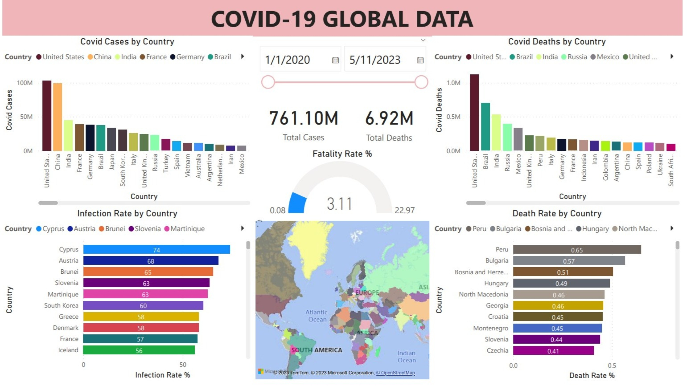
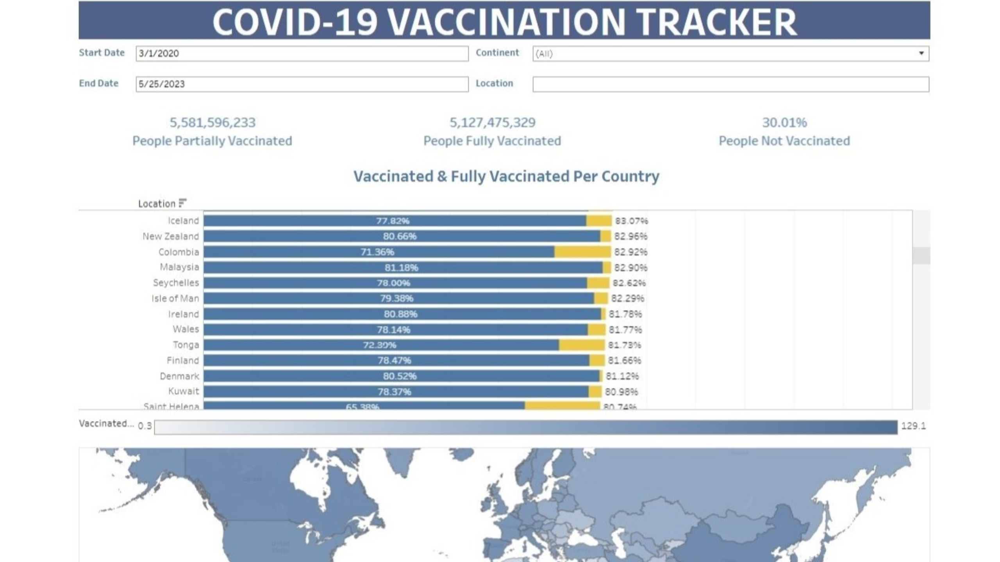
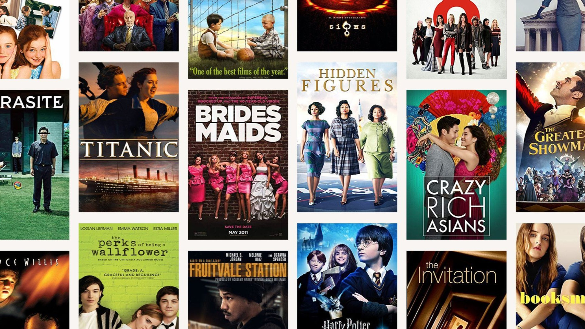

Utilizing SQL Server and leveraging the comprehensive global
dataset of COVID-19 statistics from
ourworldindata.org, an analysis was conducted to study essential information
regarding COVID-19 cases, deaths, and vaccinations. This
analytical approach enables the viewer to unveil the most
significant numbers and gain valuable insights into the global
COVID-19 situation.
Using a Nashville housing dataset to ensure data quality and
consistency, using SQL Server. The project aims to prepare the
dataset for further analysis and modeling by solving data quality
issues and cleaning up inconsistencies. The Dataset comprises
housing-related information, including property listings, sales
records, and demographic data specific to Nashville, Tennessee.

Creating interactive and visually appealing charts, graphs, and
maps to present the findings effectively. Visualizing the
geographic distribution of cases and deaths rates using Microsoft
PowerBI.

Creating an interactive synced charts, graphs, and maps to present
the findings effectively. Visualizing the geographic distribution
of vaccinations numbers, rates, and relations to country and
national GDP using Tableau.

An IMDB Movies dataset was explored using Python to gain insights
into the relationships between budget, gross revenue, and
production companies. The project involves data cleaning,
visualization, and the study of a correlation matrix to uncover
patterns and trends within the movie industry.
This Python program is designed to connect to the YouTube API
using a Google Cloud API key, enabling the retrieval of data from
multiple YouTube channels. The program extracts video data from
the specified channels using their unique channel keys. The
retrieved data is then cleaned, and visualized to gain insights
into the video trends of a particular channel.
In this Python program, CoinMarketCap API was used to establish a
connection with the coinmarketcap.com website and retrieve
real-time data on cryptocurrency market trends. The program
includes features such as continuous data retrieval through a
timer function, data cleaning to ensure accuracy, and the creation
of visualizations for effective data representation.
In this data analysis project, a comprehensive dataset that contains information
about Netflix's content, (that includes movies, tv shows, genres, directors, and orgin countries)
was studied. Using Python'spowerful data analysis libraries
such as Pandas, Matplotlib, and Seaborn, we explore, format, analyze, and visualize
the data to gain meaningful insights into the world of Netflix.
{kind=link}